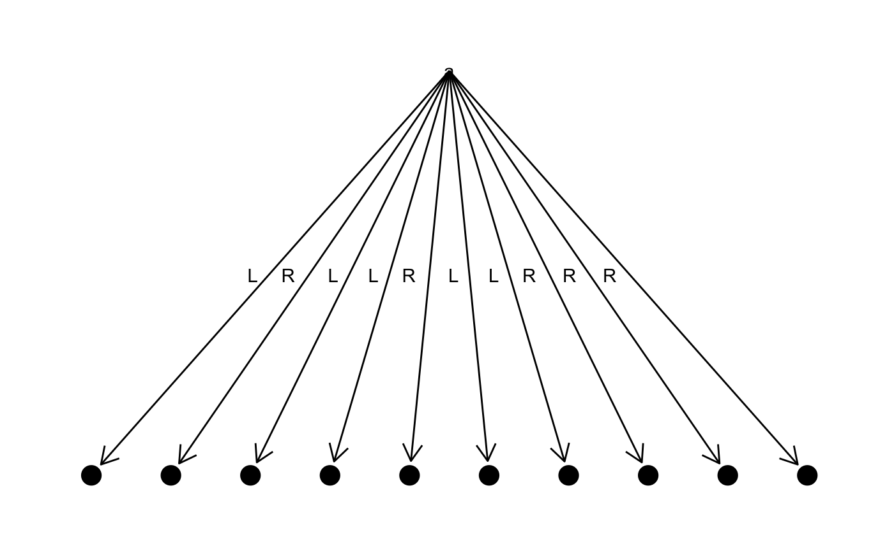
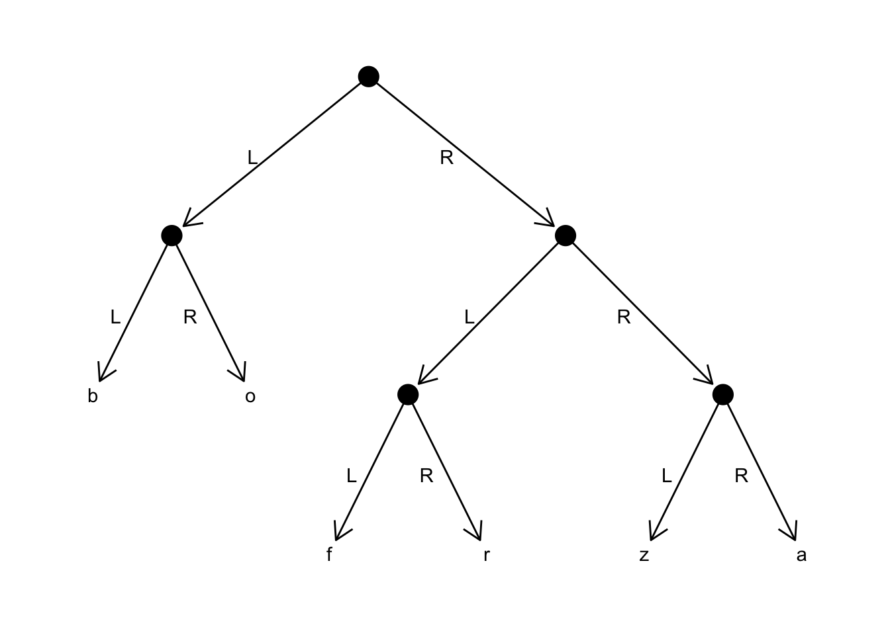

Huffman coding is a compression approach based on character frequencies. To code a string, we work out the frequency of each letter in the string and then build a tree where we put the letters in the leaves and structure the tree such that the most frequent letters are closest to the root. We then encode each letter by the path we must take in that tree to get to the leaf that contain that letter. We need one bit for each edge we follow; zero, say, if we go left and one if we go right.
In Haskell: the Craft of Functional Programming, there is an example of implementing Huffman coding in Haskell. In this vignette, I will adapt that to R with pmatch patterns. I have structured the vignette such that I switch between showing the original Haskell code and then the corresponding R code. If you are not familiar with Haskell, I think you should still be able to follow along.
Data types
The data structures used in the Haskell implementation are these:
data Tree = Leaf Char Int | Node Int Tree Tree
data Bit = L | R deriving (Eq, Show)
type HCode = [ Bit ]
type Table = [ (Char, HCode) ]The first two are data types created from constructors, and we can define the corresponding R data structures using a := declaration:
library(pmatch)
Tree := Leaf(char : character, count : integer) |
Node(count : integer, left : Tree, right : Tree)
Bit := L | RThe other two, HCode and Table are lists over Bit and pairs of characters and HCode, respectively. We won’t define types for these. In R, we don’t have static types so we don’t really name types. We need a list representation, however, and to make one that matches lists in Haskell, we define a linked list:
On occasions, we have to create singleton lists, and rather than writing CONS(val,NIL) for those, I will define a function for it. I will define a type to handle pairs in pattern matching.
Computing frequencies
Before we can encode a string we need to calculate the frequency of the characters in it. In the Haskell implementation this is done using two merge sorts, one that sorts the string characters alphabetically and count the number of occurrences of each and then another sort that orders the characters according to their frequency. Later on, we will build a tree from a list of characters, and by having the least frequent characters at the front of the list, and building from that end, we will propagate the less frequent characters to the bottom of the tree and the more frequent characters to the top.
The Haskell mergeSort function is implemented like this:
mergeSort :: ([a] -> [a] -> [a]) -> [a] -> [a]
mergeSort merge xs
| length xs < 2 = xs
| otherwise
= merge (mergeSort merge first) (mergeSort merge second)
where
first = take half xs
second = drop half xs
half = (length xs) `div` 2This function takes another function, merge, as a parameter. It is via this function we will implement the two different sort functions we need.
We don’t have where blocks in R, so we need to compute first, second and half before the recursion, but otherwise the the R implementation follows the Haskell implementation. We need some list functions first, though, for length, take and drop. We can implement them like this:
llength <- case_func(
acc = 0,
NIL -> acc,
CONS(car, cdr) -> llength(cdr, acc + 1)
)
llrev <- case_func(
acc = NIL,
NIL -> acc,
CONS(car, cdr) -> llrev(cdr, CONS(car, acc))
)
lltake <- case_func(acc = NIL,
..(., 0) -> llrev(acc),
..(NIL, k) -> stop("There were less than k elements in the list"),
..(CONS(car, cdr), k) -> lltake(..(cdr, k - 1), CONS(car, acc))
)
lldrop <- case_func(
..(lst, 0) -> lst,
..(NIL, k) -> stop("There were less than k elements in the list"),
..(CONS(., cdr), k) -> lldrop(..(cdr, k - 1))
)The llrev function, for reversing a linked list, is a helper function that lets us write tail-recursive take and drop functions. It isn’t terribly important here since we do not use any tail-recursion optimisation, but once you get into the habit of writing your functions tail recurse it is hard not to. Later on in the vignette I will use simpler functions rather than tail-recursive ones to make the examples easier to follow.
Anyway, with the list functions in place, the merge sort can be implemented like this:
merge_sort <- function(merge, xs) {
n <- llength(xs)
if (n < 2) return(xs)
half <- n %/% 2
first <- lltake(..(xs, half))
second <- lldrop(..(xs, half))
merge(..(merge_sort(merge, first), merge_sort(merge, second)))
}Sorting alphabetically and counting characters
To sort characters alphabetically and at the same time count the number of occurrences for each, we need a merge function. The Haskell function looks like this:
alphaMerge :: [(Char,Int)] -> [(Char,Int)] -> [(Char,Int)]
alphaMerge xs [] = xs
alphaMerge [] ys = ys
alphaMerge ((p,n) : xs) ((q,m) : ys)
| (p == q) = (p,n+m) : alphaMerge xs ys
| (p < q) = (p,n) : alphaMerge xs ((q,m) : ys)
| otherwise = (q,m) : alphaMerge ((p,n) : xs) ysWe do not have conditions like | (p == q) in R, so we handle those using if-else-statements, but otherwise we translate the function statement by statement into this:
alpha_merge <- case_func(
..(xs, NIL) -> xs,
..(NIL, ys) -> ys,
..(CONS(..(p,n), xs), CONS(..(q,m), ys)) -> {
if (p == q) {
CONS(..(p,n+m), alpha_merge(..(xs, ys)))
} else if (p < q) {
CONS(..(p,n), alpha_merge(..(xs, CONS(..(q,m), ys))))
} else {
CONS(..(q,m), alpha_merge(..(CONS(..(p,n), xs), ys)))
}
}
)To test the function I want to make it a little easier to build linked lists, so I have written this helper function:
llist_from_list <- function(x) {
llist <- NIL
n <- length(x)
while (n > 0) {
llist <- CONS(x[[n]], llist)
n <- n - 1
}
llist
}Ok, let us see if we can merge two lists:
xs <- llist_from_list(list(
..("a", 1), ..("b", 2)
))
ys <- llist_from_list(list(
..("a", 3), ..("c", 3)
))
alpha_merge(..(xs, ys))
#> CONS(car = ..(x = a, y = 4), cdr = CONS(car = ..(x = b, y = 2), cdr = CONS(car = ..(x = c, y = 3), cdr = NIL)))Yup, that went okay.
What about sorting? First I want a function for concatenating two linked lists, and then I will test it on the concatenation of xs and ys from above.
Concatenation can look like this:
(Here, I did choose a simple version over a tail-recursive one).
Onwards to the test:
zs <- llconcat(..(xs, ys))
merge_sort(alpha_merge, zs)
#> CONS(car = ..(x = a, y = 4), cdr = CONS(car = ..(x = b, y = 2), cdr = CONS(car = ..(x = c, y = 3), cdr = NIL)))
merge_sort(alpha_merge, llrev(zs))
#> CONS(car = ..(x = a, y = 4), cdr = CONS(car = ..(x = b, y = 2), cdr = CONS(car = ..(x = c, y = 3), cdr = NIL)))Yup, that works.
Sorting based on character frequency
To compute the character frequency we need to write this function:
freqMerge :: [(Char,Int)] -> [(Char,Int)] -> [(Char,Int)]
freqMerge xs [] = xs
freqMerge [] ys = ys
freqMerge ((p,n):xs) ((q,m):ys)
| (n < m || (n == m && p < q)) = (p,n) : freqMerge xs ((q,m):ys)
| otherwise = (q,m) : freqMerge((p,n):xs) ysThe translation is done statement by statement and with if-statements instead of | conditions:
Computing frequencies
To compute a list of character frequencies for a string, we need to combine the sort and merge functions. In Haskell, the frequency function looks like this:
frequency :: [Char] -> [(Char,Int)]
frequency
= mergeSort freqMerge . mergeSort alphaMerge . map start
where
start ch = (ch, 1)We see that we need another list function, map. I have implemented it this way:
llmap <- case_func(f, acc = NIL,
NIL -> llrev(acc),
CONS(car, cdr) -> llmap(cdr, f, CONS(f(car), acc))
)I want to work on lists of characters, so as a helper function I have written string_to_list that translates a string into a list containing the characters in the string:
string_to_list <- function(x)
llist_from_list(strsplit(x, "")[[1]])
string_to_list("foobar")
#> CONS(car = f, cdr = CONS(car = o, cdr = CONS(car = o, cdr = CONS(car = b, cdr = CONS(car = a, cdr = CONS(car = r, cdr = NIL))))))For composing functions, we can use magrittr pipelines. If we do, we just have to remember that the functions are evaluated from left-to-right, whereas in the Haskell code, they are evaluated right-to-left. So
becomes
library(magrittr)
frequency = . %>%
string_to_list() %>%
llmap(function(char) ..(char, 1L)) %>%
merge_sort(alpha_merge, .) %>%
merge_sort(freq_merge, .)If we call frequency on a string, we get a list of pairs of characters and integers. We should interpret that as a list of characters and the number of occurrences each have in the string.
Building trees
From a frequency list we need to build tree. This is the Haskell code:
makeTree :: [ (Char,Int) ] -> Tree
makeTree = makeCodes . toTreeList
toTreeList :: [ (Char,Int) ] -> [Tree]
toTreeList = map (uncurry Leaf)The uncurl Leaf stuff is a technicality needed in Haskell. To translate a list of character-count pairs into a list of trees, we simply do this:
to_tree_list <- . %>% llmap(
case_func(..(char,count) -> Leaf(char, count))
)
xs <- "foo" %>% string_to_list() %>% llmap(function(char) ..(char, 1L))
to_tree_list(xs)
#> CONS(car = Leaf(char = f, count = 1), cdr = CONS(car = Leaf(char = o, count = 1), cdr = CONS(car = Leaf(char = o, count = 1), cdr = NIL)))The makeCodes function looks like this in Haskell:
and we can translate it almost mechanically:
The same goes for amalgamate:
We can see that we need functions pair and ins_tree for these functions. The pair function shouldn’t be confused with the PAIR constructor—one of the reasons I put the latter in all uppercase. Other than that, the entire translation of the Haskell code is just done statement by statement:
pair :: Tree -> Tree -> Tree
pair t1 t2 = Node (v1 + v2) t1 t2
where v1 = value t1
v2 = value t2
value :: Tree -> Int
value (Leaf _ n) = n
value (Node n _ _) = nvalue <- case_func(
Leaf(., n) -> n,
Node(n, ., .) -> n
)
pair <- function(t1, t2) Node(value(t1) + value(t2), t1, t2)insTree :: Tree -> [ Tree ] -> [ Tree ]
insTree t1 [] = [t1]
insTree t1 (t2 : rest) =
if v1 < v2 then t1 : t2 : rest else t2 : insTree t1 rest
where v1 = value t1
v2 = value t2ins_tree <- case_func(
..(t, NIL) -> single(t),
..(t1, CONS(t2, rest)) -> {
v1 <- value(t1)
v2 <- value(t2)
if (v1 < v2) {
CONS(t1, CONS(t2, rest))
} else {
CONS(t2, ins_tree(..(t1, rest)))
}
}
)The makeTree function was defined as a composition:
We do the same using a pipeline:
tree <- "foo" %>% frequency() %>% make_tree()
tree
#> Node(count = 3, left = Leaf(char = f, count = 1), right = Leaf(char = o, count = 2))I have written some code for plotting trees, in the function plot_tree. I don’t show it here, it is a simple translation of the data structure into a table I can plot using tidy graph and ggraph, but we can use it to display trees:
#>
#> Attaching package: 'tidygraph'
#> The following object is masked from 'package:stats':
#>
#> filter
#> Loading required package: ggplot2
Code tables
The result of an encoding will be a sequence of L and R bits. We will represent these in linked lists, so to make it simpler to display these I have written these helper functions:
as.list.llist <- function(x, all.names = FALSE, sorted = FALSE, ...) {
n <- llength(x)
v <- vector("list", length = n)
i <- 1
while (i <= n) {
v[i] <- x$car
i <- i + 1
x <- x$cdr
}
v
}
as.vector.llist <- function(x, mode = "any") {
unlist(as.list(x))
}
toString.code <- function(x, ...) {
x %>% llmap(toString) %>% as.vector() %>% paste0(collapse = "")
}
code <- llist_from_list(
list(L, L, R, L)
)
code
#> CONS(car = L, cdr = CONS(car = L, cdr = CONS(car = R, cdr = CONS(car = L, cdr = NIL))))
class(code) <- c("code", class(code))
code %>% toString() %>% cat()
#> LLRLI do not simply set the class of a list to "code". I could, and most of the time that wouldn’t be a problem. However, in the specification of linked lists we required that cdr should be of type llist, so if we want to concatenate two codes—and I can reveal that we do later—then we need codes to have that type. I therefore make codes specialisations of llist with c("code", class(code)).
The encoding of a string will be implemented as follows: for each character in the string, we look up the code for that character, i.e. the sequence of left and right edges we need to reach the character in a tree, and we concatenate all these. In the implementation of the encoding we want a table that maps characters to their code, and in Haskell that table is computed using this function:
convert :: HCode -> Tree -> Table
convert cd (Leaf c n) = [(c,cd)]
convert cd (Node n t1 t2) = (convert (cd++[L]) t1) ++
(convert (cd++[R]) t2)
codeTable :: Tree -> Table
codeTable = convert []Since we pattern match on the tree and not the code, we will flip the order of the arguments. We can implement it in R like this:
convert <- case_func(code,
Leaf(char, count) -> single(
..(char, structure(code, class = c("code", class(code))))
),
Node(count, t1, t2) -> llconcat(
..(convert(t1, llconcat(..(code, single(L)))),
convert(t2, llconcat(..(code, single(R)))))
)
)
code_table <- . %>% convert(NIL) %>%
structure(class = c("code_table", class(.)))I have added a class to tables to make them easier to print.
toString.code_table <- function(x, ...) {
x %>% llmap(case_func(..(x,y) ~ paste0(x, " => ", toString(y)))
) %>% as.vector() %>% paste0(collapse = "\n")
}tree <- "foobaar" %>% frequency() %>% make_tree()
table <- tree %>% code_table()
tree %>% plot_tree()
table %>% toString() %>% cat()
#> r => LL
#> a => LR
#> o => RL
#> b => RRL
#> f => RRR
tree <- "foobarbaz" %>% frequency() %>% make_tree()
table <- tree %>% code_table()
tree %>% plot_tree()
Coding and decoding
Now, we have everything we need in order to encode and decode strings/codes. Both encoding and decoding requires a tree, so we define a function for building a tree from a string:
tree <- codes("foobarbaz")
tree %>% code_table() %>% toString() %>% cat()
#> b => LL
#> o => LR
#> f => RLL
#> r => RLR
#> z => RRL
#> a => RRRAs I have already explained, encoding combines looking up the code for individual characters and concatenating all of them. The lookup is implemented in Haskell like this:
lookupTable :: Table -> Char -> HCode
lookupTable [] c = error "lookupTable"
lookupTable ((ch,n) : tb) c
| ch == c = n
| otherwise = lookupTable tb cAnd in R like this:
lookup_table <- case_func(char,
NIL -> stop(paste(char, "was not found in the table")),
CONS(..(ch,n), tb) -> {
if (ch == char) {
n
} else {
lookup_table(tb, char)
}
}
) The encoding combines that with concatenation. We map over the characters and look up their code. We then concatenate the result.
Our llconcat function only works on two linked lists, however, so we need to handle concatenation slightly differently. I have handled it by writing a reduce function that I can use to concatenate lists pairwise:
The code_message is very similar to the Haskell version, but I have added a translation from strings to lists before the main code (this isn’t needed in Haskell because strings are already lists of characters) and I set the class of the result to make it easier to print coded messages.
code_message <- function(message, table) {
message %>% string_to_list() %>%
llmap(function(char) lookup_table(table, char)) %>%
llreduce(function(x,y) llconcat(..(x,y)), NIL) %>%
structure(class = c("code", class(.)))
}
tree <- codes("foobarbaz")
table <- tree %>% code_table()
code <- "foobar" %>% code_message(table)
code %>% toString() %>% cat()
#> RLLLRLRLLRRRRLRDecoding works by following paths down the tree until we get to a character, which we then add to the list as the decoding of a part of the code, and doing this as long as we have path-bits in our encoded message.
decodeMessage :: Tree -> HCode -> [Char]
decodeMessage tr =
decodeByTree tr
where
decodeByTree (Node n t1 t2) (L : rest) = decodeByTree t1 rest
decodeByTree (Node n t1 t2) (R : rest) = decodeByTree t2 rest
decodeByTree (Leaf c n) rest = c : decodeByTree tr rest
decodeByTree t [] = []For this function, the R code closely follows the Haskell code, except that we have to put the decode_by_tree function at the beginning of the function instead of in a where block:
decode_message <- function(tree, code) {
decode_by_tree <- case_func(
..(Node(n, t1, t2), CONS(L, rest)) -> decode_by_tree(..(t1, rest)),
..(Node(n, t1, t2), CONS(R, rest)) -> decode_by_tree(..(t2, rest)),
..(Leaf(char, n), rest) -> CONS(char, decode_by_tree(..(tree, rest))),
..(t, NIL) -> NIL
)
decode_by_tree(..(tree, code)) %>% as.vector() %>% paste0(collapse = "")
}
decode_message(tree, code)
#> [1] "foobar"That’s it. Huffman coding in R.